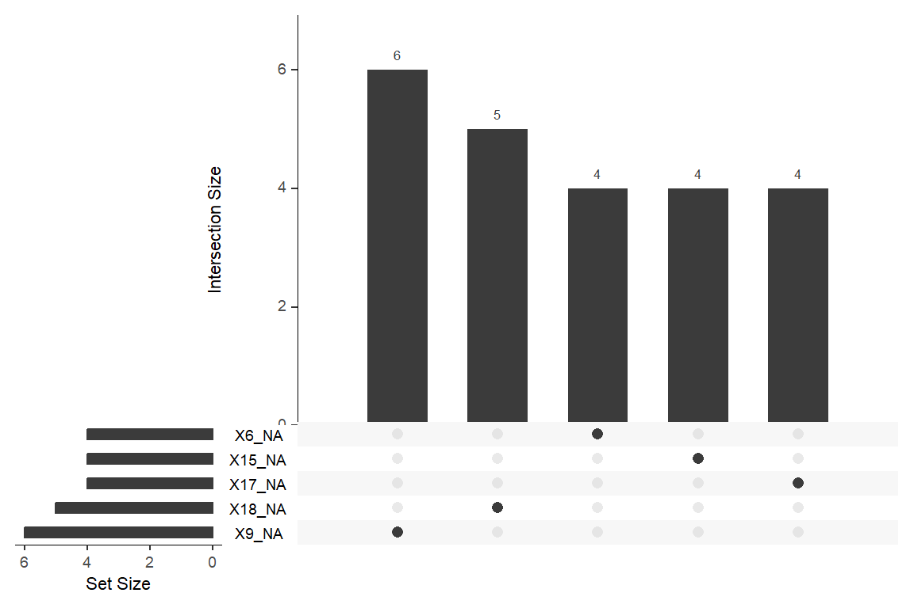
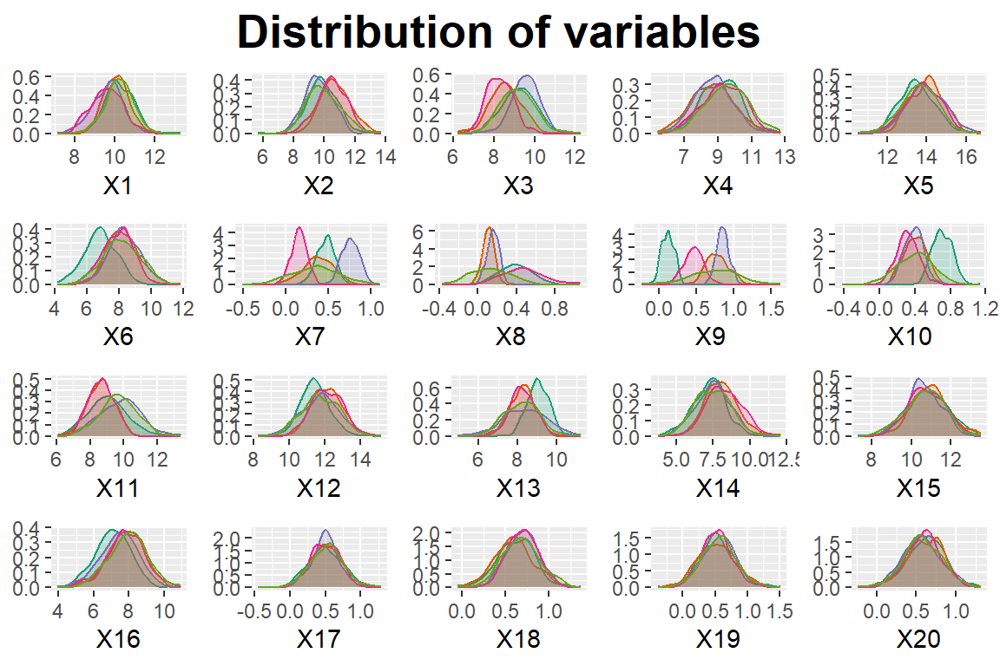

Chemical Sample Classification Report
Brief
The brief is to develop a model to effectively classify chemicals into groups using supplied measurements.
The client wants to know if all variables are necessary for good out-of-sample classification performance.
This report will:
explore and analyse the provided dataset
develop an optimised, classification model
comment viability of using reduced variable datasets
provide recommendations
Note
Additional analysis is available in the technical version of this report, including code and comments.
Data
The supplied dataset contains 2500 samples, each with 20 measurements.
The analysis team was not supplied with information about the data, e.g.:
- what is measured
- variable importance, interactions
- measurement information: scale, units, reliability
Therefore, variables are treated equally and without bias. Decisions are made on statistical grounds and stated assumptions.
Tip
Additional domain-specific contextual information about the data could result in alternative modelling decisions and outcomes.
Missing data
Before proceeding with Exploratory Data Analysis, it is important to explore missingness. Some classification models assume no missing data, and depending on the amount, prevalence and pattern, different assumptions and techniques are appropriate.
Data is assumed to be ‘missing at random’ (MAR) - that is, the probability of missingness only depends on observed variables.
The sample has 49 rows with at least one missing value, which is 0.09% of the entire dataset. Given the minute amount, rows with missing values will be removed.
Caution
The client should consider:
- Concerns regarding missing data
- Consistency measurements (equipment, staff, facilities, chemicals, etc.)
- Reasons for missing data? Mitigation?
- Can missing data be collected retrospectively?
- Likely amount of missing data in the future?
Missing value details by class and variable
This dataset has 18 variables with missing data. The five variables with the most missing data are:
Variable | Count | Percentage |
|---|---|---|
X9 | 6 | 0.24 |
X18 | 5 | 0.20 |
X1 | 4 | 0.16 |
X6 | 4 | 0.16 |
X15 | 4 | 0.16 |
Variable X9 has the most missing values with 6, accounting for 0.24% of this variable’s data.
No single sample has more than 1 missing value(s). This means that, at most, a sample is missing 4.76% of its data.
Label E has the most missing data with 0.52%.
Label | Count | Percentage |
|---|---|---|
A | 10 | 0.40 |
B | 6 | 0.24 |
C | 10 | 0.40 |
D | 10 | 0.40 |
E | 13 | 0.52 |
Patterns of missingness are apparent for sequential variables:
Caution
Missingness by variables for labels:
- X1-X4 is only missing for label A
- X6, X8 are only missing for label B
- X9-X12 is only missing for label C
- X13-X16 are only missing for label D
- X17-X19 are only missing for label E
Is there a relationship?
Splitting data
In order to avoid introducing bias into the process, the data is divided into subsets. Insights from analysis are solely from the training data.
As the data is not perfectly balanced between labels, it is split with ‘stratification’ ensuring that each partition has a representative proportion of labels.
label | Frequency | Percent |
|---|---|---|
A | 508 | 20.73 |
B | 492 | 20.07 |
C | 492 | 20.07 |
D | 487 | 19.87 |
E | 472 | 19.26 |
Decision
Rows with missing data are removed.
The data is split:
train- 50% - to train the classification modelvalidation- 25% - to validate and tune performance of the trained model(s); to establish model generalisabilitytest- 25% - to evaluate the performance of the final model; only used once and kept separate
Exploratory Data Analysis
Overall Size and Shape
train has 1225 rows, with an overall minimum value of -0.52 (X7) and an overall maximum value of 16.76 (X5).
Statistic | Minimum | Maximum |
|---|---|---|
Mean | 0.25 (X8) | 13.8 (X5) |
Variance | 0.04 (X10) | 1.57 (X4) |
Range | 1.42 (X18) | 8.37 (X14) |
Spread between variables in terms of mean, variance and range is significant.
Outliers
Values which are significantly different from other data points in the dataset were explored. It is essential to distinguish between genuine extreme values and errors (measurement, data entry, faulty readings). Genuine data contain valuable information; problematic outliers may need to be treated or removed as they can skew analysis.
Distribution plots suggest that variables are generally normally distributed (Figure 3) with some non-normality (Figure 4).

The violin plots (Figure 5) visualise potential outliers - data points beyond 1.5x the interquartile range (IQR) (50% of the data). These are the points on the whiskers; X8 has many more potential outliers than variable X9.
trainThe distribution and density plots in Figure 4 show potential non-normal distributions, with multiple peaks or skewness. The violin plots (Figure 5) help visualise potential outliers - data points beyond 1.5x the interquartile range (IQR), representing 50% of the data. These are the dots on the whiskers; X8 has many more potential outliers than variable X9.
trainPotential outliers were investigated statistically with varying results depending on method and sensitivity.
A general approach involves identifying data which is ± 3 standard deviations from a calculated statistic (z-score) - meaning it is beyond 0.3% of the centre.
There are a total of 81 ‘outliers’ in the dataset from 19 variables; ‘X8’ has the most with 10.
Decision
Data will be scaled to prevent variables having undue influence.
Outliers will be retained.
Correlation between Variables

After exploring overall statistics and outliers, this section examines linear relationships. The correlation matrix shows strong negative correlation between X18, X20 each with X17, X19 and strong positive correlation between X18 and X20 as well as between X17 and X19. A lot of variables have little or no correlation.
The ellipsoid shapes in the pair plot highlight liner relationships with correlation coefficients (-1 to 1) indicating the strength of the relationship.

Principal Component Analysis
Suitability
Principal Component Analysis attempts to reduce the variability in a dataset to fewer, linearly uncorrelated ‘principal components’.
The sample dataset appears suitable for PCA based on correlations. This is statistically confirmed with a KMO test value of 0.71 which is greater than the accepted threshold for PCA suitability (0.6).
Only three variables have a low sampling adequacy, with X15 having a value of 0.46.
MSAi_band | Suitability | Variables |
|---|---|---|
0.8-0.89 | Excellent | X12, X13 |
0.7-0.79 | Good | X2, X3, X5, X6, X8, X11, X14, X16, X17, X18, X19, X20 |
0.6-0.69 | Mediocre | X7, X9, X10 |
0.5-0.59 | Marginal | X1, X4 |
< 0.5 | Unsuitable | X15 |
Components
Screeplots and Horn's Parallel Analysis help determine how many components to retain. The visual approach, where eigenvalues (representing variance explained) are plotted against components and parallel analysis indicate 4 components.
Implementing PCA
Most variables load on at least one component but loadings on components 5, 6, etc. will not be retained. For example, X20 is highly loaded on the fourth component but not contributing elsewhere.
The PCA biplots show correlations discussed in Exploratory Data Analysis in the components.
Angles between variables:
- close to 0° indicate a strong positive correlation (X17, X19)
- close to 180° indicate a strong negative correlation (X17, X18)
- close to 90° are uncorrelated (X8, X17)
The length of the vector indicates the importance of that variable in explaining the variance.
Figure 9 shows some strong correlations captured in the first two dimensions, while the third dimension is more difficult to interpret.
Clustering
Clustering techniques were deployed on the datasets with and without PCA transformation to assess its usefulness.
It is difficult to identify clusters with K-means clustering.
Silhouette plots show cluster quality; PCA-transformed data results in ‘better’ clusters. The height represents how well that observation matches its cluster - PCA data has an average of 0.22 in comparison to 0.08 for the scaled data.
The ‘optimal’ number of clusters for both datasets using within-cluster sum of squares (WSS) is 4 or more.
However, the gap statistic as an estimate of optimal clusters, does not converge for non-PCA, (meaning it cannot identify clusters), while the PCA data seems to have its ‘elbow’ between three and six clusters.
The dataset does not have obvious clusters.
Classification Models
PCA Performance
Three classifiers were developed and fitted with PCA and non-PCA data to compare results: k nearest neighbour (KNN), model based discriminant analysis (DA) and support vector machines (SVM).
Models were trained and then validated on ‘unseen’ data. Accuracy (correct model predictions) was the performance metric.
K Nearest Neighbour
KNN classifies samples into groups by ‘distance’ to neighbours. Overall, non-PCA models performed better with a best default accuracy of 0.82% compared to 73.5%.
KNN classifies samples into groups by ‘distance’ to neighbours. Overall, non-PCA models performed better with a best default accuracy of 0.82% compared to 0.74%.
Discriminant Analysis
Discriminant Analysis classification creates groups from mixed mathematical models based on different variable means. The default model had accuracies of 96.41% (non-PCA) and 75% on the ‘validation’ dataset.
Label E is particularly challenging to classify with false positives and false negative misclassifications.
Support Vector Machines
SVM which did not perform as well as DA or KNN. The non-PCA model had an accuracy of 90.69% and the PCA model resulted in an accuracy of only 69.77%.
Decision
PCA is not appropriate on this dataset as it does not capture enough variability for a successful classifier.
Feature Reduction
An alternative to dimension reduction is feature reduction - removing variables. Some variables may not add explanatory power because they capture similar information to other variables or they do not contain relevant information.
Clustering techniques like trees and random forests, can help identify candidate variables for inclusion / exclusion. Figure 15 shows taht variables X7-X10 are more important when splitting into labels.
Reduced variable datasets to test performance:
| Set | Included Variables |
|---|---|
| Set 1 | X7, X8, X9, X10 |
| Set 2 | X7, X8, X9, X10, X3, X1 |
| Set 3 | X7, X8, X9, X10, X3, X11 |
| Set 4 | X7, X8, X9, X10, X3, X1, X2, X13 |
| Set 5 | X7, X8, X9, X10, X3, X11, X16 |
Model Performance
Models were optimsed by searching through combinations of hyperparameters on datasets with different variables.
KNN loop
The best performing KNN model uses valid_3 consisting of: X7, X8, X9, X10, X3, X11. The complete dataset (valid_6) peaks with an accuracy of 88.89% compared to 95.1% for the reduced variable set.
DA loop
Discriminant Analysis (LDA) models were tuned with ‘n.components’, ‘diagonal’ and ‘model name’ hyperparameters to allow the algorithm to find the combination of mixture models with the best accuracy for the groups.
The ten best DA models are:
dataset | accuracy |
|---|---|
Complete | 0.9771242 |
Complete | 0.9754902 |
Complete | 0.9738562 |
Reduced Set 3 | 0.9722222 |
Complete | 0.9722222 |
Complete | 0.9705882 |
Reduced Set 4 | 0.9689542 |
Complete | 0.9689542 |
Reduced Set 2 | 0.9673203 |
Reduced Set 3 | 0.9673203 |
The complete dataset has the highest accuracy (97.71%) but there are 4 models using reduced datasets in the top 10. Set 3 has an accuracy of 97.22% - a performance difference of 0.49% using only 6 variables instead of 20.
Random Forest loop
The random forest classifiers are very quick to run and perform very well. All of the forests achieve higher than 95.92% accuracy with the complete dataset marginally best with an accuracy of 96.73%.
Findings
Data
The supplied sample dataset is of good quality and generally suitable for classification modelling. There are some outstanding questions about missing data and potential outliers, but nothing of or which prevents analysis and modelling.
Data Reduction
Principal Components Analysis was found to be unsuitable as a dimension reduction technique on this data - not enough variability was captured.
Feature Reduction, where variables are excluded from the classification models, was found to be successful at a small cost to performance.
Classification Models
Trees, random forests, discriminant analysis, support vector machine, clustering and k nearest neighbours were investigated.
The best performing model overall was a Discriminant Analysis model on the using all variables, resulting in an accuracy of 97.7% on the validate set.
The best performing model using a reduced variable dataset was also a DA model, with an accuracy of 97.2%.
Test Data
The final assessment of the models is on completely untouched data - the test set.
Test Results
Accuracy of DA Model using All Variables: 95.92%
Accuracy of DA Model using Reduced Variables: 94.28%
Performance hit from using less variables: 1.64%
Recommendations
- Exploratory session with domain expert to gain insight into dataset:
- Missing data
- Outliers
- Variables - especially label E
- Measurements
- Deploy Classification Model using reduced variable set
- Consider further model improvement
Speed gains
Accuracy gain